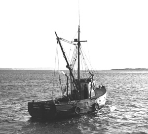

|  copyright - WHOI |
Built: 1929 in Wakefield, RI. Length: 34'2" Beam: 12'4" Draft: 4'5" |
The Woods Hole Oceanographic Institution purchased Little Reliance
from Mr. E.B. Athearn in 1943 and used it for wave research, beach profiles,
and in developing instruments. Little Reliance was sold in 1946
to Mr. F.E. Clark of Jamestown, RI.